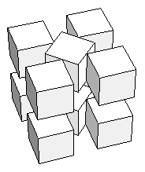
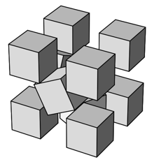
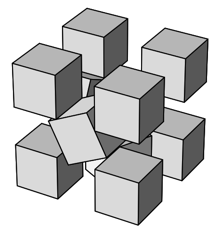
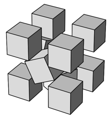
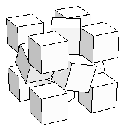
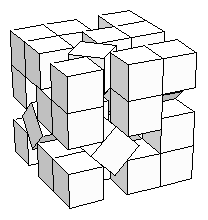

9-10.

11.

11.

 2 = 2.707+
2 = 2.707+Found by Erich Friedman in 1998.
2/5 + 3/5 = 2.912+Found by Erich Friedman in 1998.
9-10.
|  | |||
| s = 2 + 1/2 = 2.707+ Found by Erich Friedman in 1998. | s = 2 + 22/5 + 3/5 = 2.912+ Found by Erich Friedman in 1998. |
12.
|  | |||
| s = 2 + 22/3 = 2.942+ Found by Erich Friedman in 1998. | s = 2.956+ Found by Erich Friedman in 1998. |
14.
|  | |||
| s = 2 + 72/10 = 2.989+ Found by Erich Friedman in 1998. | s = 3 + 1/2 = 3.707+ Found by Erich Friedman in 1998. |